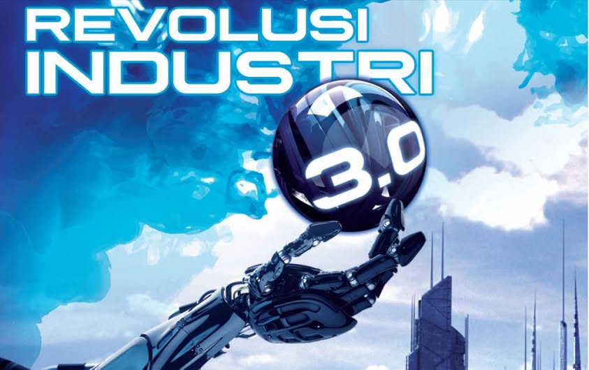

Revolusi Industri 3.0
Seiring berjalannya waktu, perkembangan industri terutama di Indonesia berubah menjadi revolusi industri 3.0.
perkembangan industri ini peran manusia sudah mulai berkurang berganti menjadi mesin. Maksudnya tenaga
manusia sudah tidak dibutuhkan lagi dan perusahaan hanya mengandalkan mesin untuk memproduksi dalam sebuah
industri.
Contohnya menggunakan komputer yang mana komputer bisa menggantikan yang dulunya manusia yang
mengerjakan semuanya. Cukup mengadakan komputer maupun robot untuk ada perintah melakukan segala tindakan.
Sebagai contoh lain selain komputer untuk perkembangan industri 3.0 adalah mesin press, mesin pemotong,
mesin pembuatan dan mesin otomatis lainnya.
Dalam perkembangan industri 3.0 menjadi revolusi yang sangat
penting. Perusahaan-perusahaan mulai mengutamakan ketepatan dan ketelitian yang sangat tinggi yang mana
kedua hal itu manusia untuk melakukannya. Penggunaan teknologi canggih saat itu menjadi solusi terbaik dan
tepat untuk perusahaan. Sehingga komputer yang melakukan semuanya secara otomatis dengan cepat dan
berkualitas.